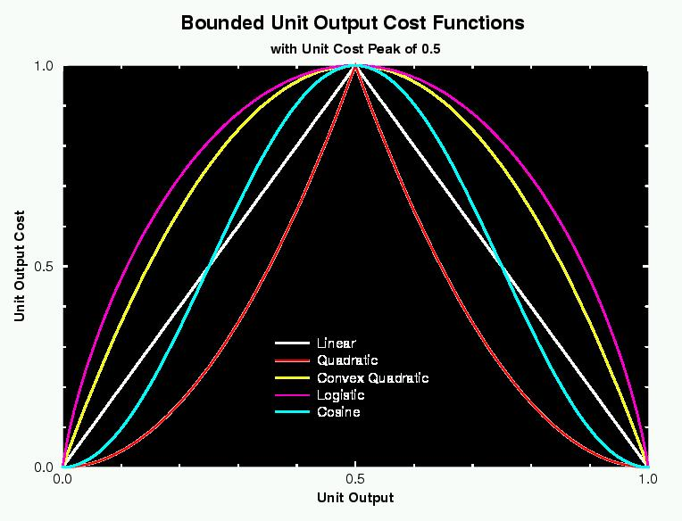
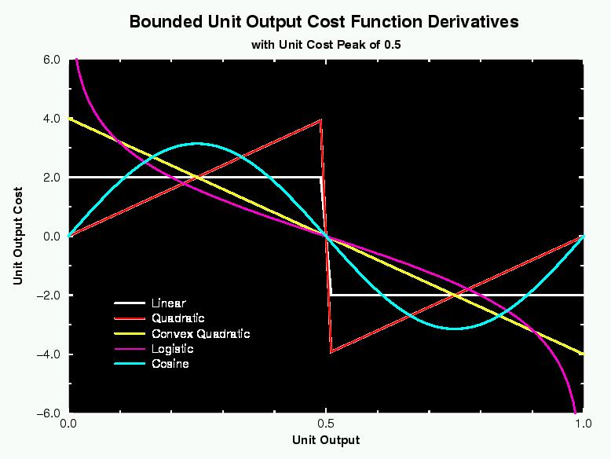
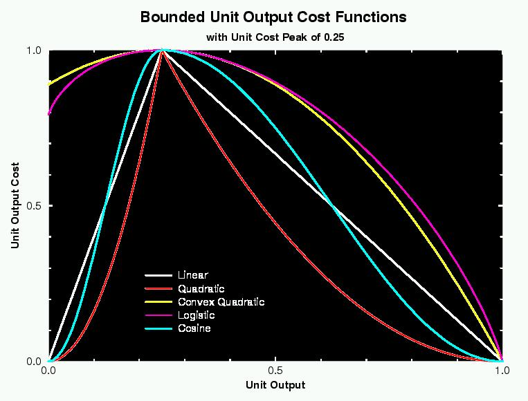
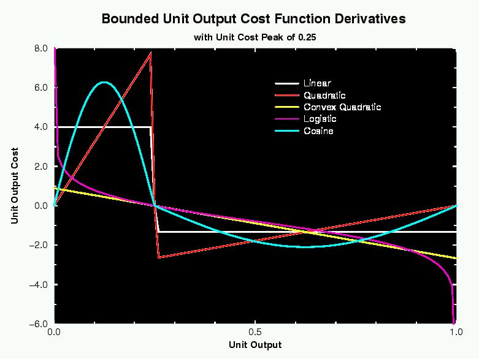

Special Topics: Group Cost Types
There are actually two very different kinds of cost functions: error
functions and unit output cost functions. The error functions are based
on the similarity of the outputs and targets. The unit output cost
functions simply charge the unit for producing certain outputs, such as
non-binary ones. The error functions assess no error when the target is
NaN.
Error Types
- SUM_SQUARED
- This simply takes the sum over all units of the squared difference
between the output and target. This is only the default for LINEAR
output groups.
- CROSS_ENTROPY
- This is the sum over all units of:
t log(t/o) + (1-t) log((1-t)/(1-o)),
where t is the target and o is the output. This can
become infinite if the output incorrectly reaches 0.0 or 1.0. This
may happen if the training parameters are too aggressive. Lens
caps the error at a very large value. CROSS_ENTROPY is the default
error type for most output groups.
- DIVERGENCE
- This is the sum over all units of:
t log(t/o)
This is only stable if the target vector and output vector are each
normalized to sum to 1.0. This is the default error type for SOFT_MAX
output groups.
- COSINE
- This calculates the 1.0 - the cosine of the angle between the output
and target vectors. This can be used for training as well as
evaluation. However, training can be tricky because there is only
pressure for the angle of the output vector to be correct, not the
absolute values of the outputs. You could use a unit cost function
(such as LOGISTIC_COST) on the output units to encourage them to be
binary if that is desired.
Target Types
- TARGET_COPY
- The units in a group with a TARGET_COPY cost function will copy
their targets from some field in the corresponding units of another
group. The copyConnect
command must be used to specify which group and which field will be
the source of the copying. The TARGET_COPY type should be specified
prior to the main error type.
Output Cost Types
Unit output costs are error terms that penalize units for having certain
outputs. For bounded units (ones whose outputs are limited to a finite
range), there are five unit cost functions, all of which encourage the
unit to have binary output. Non-bounded units can have one of two cost
functions that encourage the unit to be silent.
Output costs would typically only be applied to hidden layers, although
they may be useful on output layers as well. They can be used with
simple and continuous networks, but not with Boltzmann machines.
When used on a bounded group, the cost functions will be low at the
extremes and will have a maximum cost of 1.0 at the
outputCostPeak, which is typically at 0.5.
- LINEAR_COST
- For a bounded unit this changes linearly from 1.0 at the peak to 0.0
at the min and max output. For an unbounded unit, this is simply
equal to the absolute value of the output.
- QUADRATIC_COST
- For a bounded unit, this has a derivative of 0 at the extremes and
slopes up concavely to the peak. For unbounded units this is equal to
the output squared.
- CONV_QUAD_COST
- This can only be used on bounded units. It is shaped like a
downward-facing parabola. The derivative is 0 at the peak.
- LOGISTIC_COST
- This can only be used on bounded units. It is similar in shape to
the CONV_QUAD_COST but the derivative goes to infinity as it
approaches the extremes. However, the derivative is capped as if the
output could not get closer than 1e-6 of the min or max.
- COSINE_COST
- This can only be used on bounded units. It has zero derivative at
the min, max, and the peak.

The following figure shows the derivatives of the above functions:

Here are the functions as they would appear with a outputCostPeak of
0.25. Note that convex-quadratic and logistic are not necessarily 0.0
at the extremes, although no function will become negative:

And the derivatives:

The network's outputCostStrength scales the derivatives when they
are injected into the units' outputDeriv fields. Generally a
value about the same order of magnitude as the learning rate should be
reasonable, though you may not want to activate unit costs too early in
training or the units will get pinned. The network's
outputCostStrength does not affect the outputCost as
calculated for the whole network. It only affects the derivatives.
Groups can be given their own outputCostStrength and
outputCostPeak to override the network defaults. If the group's
unit cost strength is different from the network's, the group's
contribution to the network's unit cost will be scaled by their ratio.
In this way, if the cost of some groups is more important than that of
others, it will be reflected in the outputCost.
Douglas Rohde
Last modified: Fri Nov 10 23:02:30 EST 2000